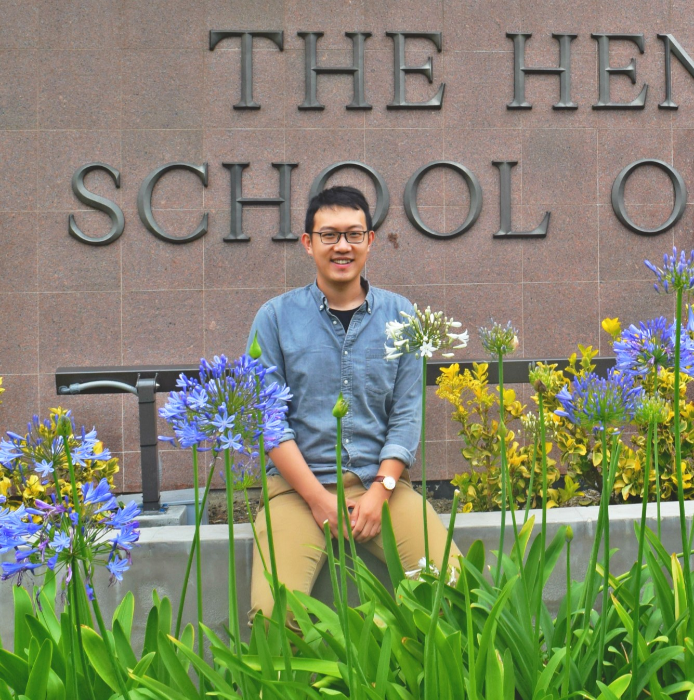

<!DOCTYPE html>
<!--This is how to comment-->
<html>
<style type="text/css">
  #main_footer{
    text-align: center;
    font-size:18px;
  }
<head>
  <title>
    Lujun's Website
  </title>
</head>

<body>
  <h2>Hi there, welcome to Lujun's webpage!</h2> 
  <!--My Head Shot hear-->
  
  <h3>Brief Bio </h3> 
  
  <p>
    May/22/1993, born in Tianjin, China.<br>
    Jun/24/2015, received B.E. in Agricultural Water Conservancy Engineering from <a href="http://en.hhu.edu.cn/" target="_blank">
    Hohai University</a>, China.<br>
    Jun/18/2017, received M.S. in Hydrology & Water Resources Engineering from the <a href="https://uci.edu/" target="_blank">
    University of California at Irvine</a>.<br>
    Jun/01/2019, resigned from the <a href="http://www.craes.cn/" target="_blank">Chinese Research Academy of Environmental Sciences 
    (CRAES)</a> at Beijing.<br>
    present, PhD student in <em>Hydrogoly & Water Resources</em> at the <strong>University of Oklahoma at Norman</strong>.<br>
  </p>
  
  <ul>
    <li><a href="Current_Reseach.html" target="_blank">My Work</a>
    <li><a href="Code_Sharing.html" target="_blank">Code Sharing</a>
    <li><a href="My_Life.html" target="_blank">About My Life</a>
  </ul>
  
  <footer id="index_footer">
    <p>Copyright &copy; 2019, Lujun Zhang</p>
  </footer>
</body>
</html>
